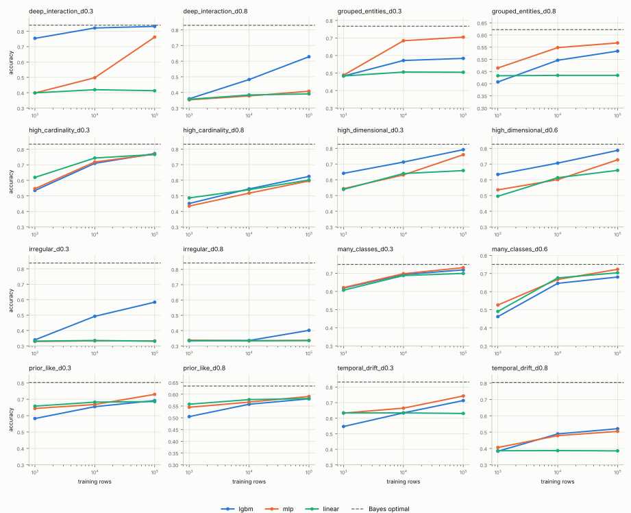

Date: 2026-11-09. Code: tabicl-hard-synth/hardsynth/.
Grid: suite.yaml, smoke.
Build synthetic tables (up to 10M rows) on which TabICL is expected to lose to gradient-boosted trees or an MLP, so that the next iterations can ask: at which data size, and how far from the pre-training prior, does fine-tuning TabICL pay for itself instead of falling back to LightGBM or an MLP?
The released tabicl package (2.2.0) ships the
pre-training prior (tabicl.prior). Reading its defaults and
the TabICLv2 training recipe gives a concrete picture of the data the
model has seen:
| prior property | TabICLv2 pre-training | where real data leaves it (BeyondArena) |
|---|---|---|
| rows per table | 400 to about 60 000 (log-uniform in the last training stages) | tables with >= 100k rows, up to 1M |
| columns | 2 to 100 | up to 22k |
| classes | at most 10 | many-class tasks |
| categorical levels | mostly 2 to 9, at most 200 | high-cardinality ids, free text |
| row structure | IID rows | temporal splits, grouped (unseen-entity) splits |
| target functions | random graph SCMs with 8 function types (MLP, GP, tree, discretisation, ...) chosen to span smoothness levels; noise only through unobserved node dimensions | irregular, high-frequency, deep interactions |
| feature scale | standardised, clipped at 4 std at inference | heavy tails, outliers |
BeyondArena (arXiv:2606.30410; 142 datasets, 11 models, Elo calibrated so that a default XGBoost scores 1000) defines its sub-benchmarks as: Tiny 100 <= n <= 1k, Small 1k < n <= 10k, Medium 10k < n <= 100k, Large n > 100k training rows; Low <= 100 and High > 100 columns after preprocessing; High Card. = at least one categorical column with more than 50 categories; plus Text, IID, Temporal and Grouped. Datasets with more than 1.25M rows are subsampled to 1M training rows. TabPFN-2.6 and TabDPT were only run up to 100k rows; TabICLv2 ran everywhere, with its ensemble reduced to one member on the 5 largest datasets.
Its findings, as far as they matter for this generator:
A synthetic generator with one knob per axis can do what the benchmark cannot: vary size, grouping, drift, width, cardinality and target irregularity independently, at any number of rows, with the Bayes error known.
Each family has a single difficulty knob in [0, 1]. At 0
the family is close to the prior; at 1 it is far outside. All families
share n_samples, n_features,
task, n_classes, label_noise,
imbalance and seed.
| family | axis | difficulty 0 -> 1 | split |
|---|---|---|---|
prior_like |
control, inside the prior | label noise std 0.1 -> 1.0 | random |
deep_interaction |
large data / high-order interactions: target is a random lookup table over the joint discretisation of k features | 9 -> 1.7M table cells; table weight 0.5 -> 1.0 | random |
high_cardinality |
level-specific effects of Zipf-distributed categoricals plus a hashed pair interaction | 3 columns x 10 levels -> 6 x 10 000 levels; pair weight 0 -> 1 | random |
many_classes |
Gaussian class clusters in an 8-d latent space, injective warp to 20 observed features, noise features | 10 -> 500 classes; Bayes accuracy calibrated to 0.75 | random |
high_dimensional |
20 informative columns under 16 random ReLU units and products; half the rest are low-rank confounders, half noise; Student-t marginals | 100 -> about 3 000 columns; t(10) -> t(2) | random |
temporal_drift |
feature means drift along sine curves, the coefficient vector
rotates with time, a seasonal term; time is a feature |
no drift -> 2 std mean drift, 90 degree rotation, season weight 1 | last rows |
grouped_entities |
rows belong to entities with observed covariates, individual x
entity interactions and an unobserved entity effect;
group_id is a feature |
100 -> 10 000 training entities; unobserved effect std 0 -> 1 | unseen entities |
irregular |
sums of high-frequency sinusoids plus a parity (XOR) of sign bits | 0.5 -> 8 cycles per std; parity of 2 -> 6 bits, weight 0 -> 1 | random |
Every family exposes the Bayes-optimal reference per row:
_p_bayes, the largest class posterior, for classification,
and _y_clean = E[y | x] for regression. For the
latent-threshold families the posterior is exact under the Gaussian
label noise; for many_classes it is exact because the warp
from latent to observed space is injective; for
grouped_entities it is the unseen-entity oracle that does
not know the entity's random effect. Learning curves can therefore be
read as "distance to the ceiling", not only as "model A vs model B".
deep_interaction: with b^k independent cell values, a
learner needs on the order of 10 x b^k rows to resolve the table. At
difficulty 0.8 there are 78 125 cells, so accuracy keeps improving up to
about 1M rows. An in-context learner sees at most its context (TabICL
recommends <= 100k rows, the pre-training prior never exceeded 60k);
the rows beyond the context are simply unused unless the model is
fine-tuned.high_cardinality: TabICL ordinal-encodes categoricals
and warns above 40 levels; the prior has at most 200 levels and
typically < 10. LightGBM handles the levels natively and the MLP uses
target encoding.many_classes: above 10 classes TabICL falls back to
hierarchical classification over class subsets.high_dimensional and irregular: the
prior's functions are smooth tree/MLP/GP mixtures with <= 100
columns; heavy tails are clipped at 4 std, which destroys the signal in
the tails.temporal_drift and grouped_entities:
in-context learning weights all context rows equally and has no notion
of recency or of an entity; trees split on time and MLPs
extrapolate the smooth drift at least locally. These two families also
test memorisation: the group_id column lets a model fit
entity effects that do not transfer to unseen entities.python -m hardsynth.generate --family deep_interaction --difficulty 0.8 --n-samples 10_000_000 --test-size 200_000 --n-classes 3:
10M rows x 30 features in 22 s on this 4-core cloud VM (numpy 2.5.3,
pyarrow, zstd Parquet), 1.3 GB on disk, chunks of 1M rows so peak memory
stays below 1 GB. The wide family is the exception: 10M x 3 000 float32
would be 120 GB, so the full grid caps it at 0.5M to 1M
rows.
Setup: every family at two difficulties (suite.yaml,
grid smoke), 300 000 rows of which the last 50 000 are the
test split, 3 classes, label noise 0.3, seed 0. Learning curves over
random training subsets of 1k, 10k and 100k rows. Models with their
default-ish settings, no tuning:
MLPClassifier, two hidden layers of
256, Adam, early stopping; numerics standardised, categoricals
target-encoded.TabICL could not be run in this session: the checkpoint lives on
Hugging Face, which this cloud environment cannot reach. The
tabicl pixi environment and the tabicl /
tabicl-ft model names in hardsynth.evaluate
are in place for the GPU follow-up.
Hardware: 4 vCPU cloud VM, 15 GB RAM, Linux; Python 3.12, numpy
2.5.3, scikit-learn and LightGBM from conda-forge (exact versions in
each results.json).
Command:
pixi run suite --grid smoke --data-dir data --evaluate \
--out journal/2026-11-09-generator-baselines \
--models lgbm mlp linear --train-sizes 1000 10000 100000 --test-rows 50000Best test accuracy per model over the three training sizes; in brackets the change from 10k to 100k training rows (the "does more data still help" signal). Bayes is the accuracy of the true posterior on the same test rows. With 50 000 test rows the standard error of an accuracy is about 0.002.
| dataset | family | difficulty | metric | Bayes | LightGBM | MLP | linear | TabICL | TabICL-ft |
|---|---|---|---|---|---|---|---|---|---|
| deep_interaction_d0.3 | deep_interaction | 0.30 | accuracy | 0.840 | 0.832 (+0.010 at 100,000) | 0.762 (+0.265 at 100,000) | 0.419 (-0.007 at 100,000) | ||
| deep_interaction_d0.8 | deep_interaction | 0.80 | accuracy | 0.829 | 0.628 (+0.146 at 100,000) | 0.408 (+0.030 at 100,000) | 0.390 (+0.007 at 100,000) | ||
| grouped_entities_d0.3 | grouped_entities | 0.30 | accuracy | 0.767 | 0.583 (+0.012 at 100,000) | 0.705 (+0.021 at 100,000) | 0.505 (-0.001 at 100,000) | ||
| grouped_entities_d0.8 | grouped_entities | 0.80 | accuracy | 0.622 | 0.534 (+0.038 at 100,000) | 0.567 (+0.019 at 100,000) | 0.434 (-0.000 at 100,000) | ||
| high_cardinality_d0.3 | high_cardinality | 0.30 | accuracy | 0.833 | 0.772 (+0.063 at 100,000) | 0.769 (+0.051 at 100,000) | 0.767 (+0.023 at 100,000) | ||
| high_cardinality_d0.8 | high_cardinality | 0.80 | accuracy | 0.831 | 0.624 (+0.080 at 100,000) | 0.596 (+0.079 at 100,000) | 0.601 (+0.062 at 100,000) | ||
| high_dimensional_d0.3 | high_dimensional | 0.30 | accuracy | 0.826 | 0.792 (+0.079 at 100,000) | 0.759 (+0.128 at 100,000) | 0.659 (+0.019 at 100,000) | ||
| high_dimensional_d0.6 | high_dimensional | 0.60 | accuracy | 0.826 | 0.787 (+0.081 at 100,000) | 0.727 (+0.126 at 100,000) | 0.660 (+0.047 at 100,000) | ||
| irregular_d0.3 | irregular | 0.30 | accuracy | 0.837 | 0.584 (+0.092 at 100,000) | 0.333 (-0.000 at 100,000) | 0.335 (-0.005 at 100,000) | ||
| irregular_d0.8 | irregular | 0.80 | accuracy | 0.842 | 0.402 (+0.066 at 100,000) | 0.337 (+0.002 at 100,000) | 0.335 (+0.001 at 100,000) | ||
| many_classes_d0.3 | many_classes | 0.30 | accuracy | 0.749 | 0.719 (+0.026 at 100,000) | 0.731 (+0.033 at 100,000) | 0.699 (+0.012 at 100,000) | ||
| many_classes_d0.6 | many_classes | 0.60 | accuracy | 0.750 | 0.680 (+0.035 at 100,000) | 0.723 (+0.056 at 100,000) | 0.704 (+0.028 at 100,000) | ||
| prior_like_d0.3 | prior_like | 0.30 | accuracy | 0.802 | 0.692 (+0.037 at 100,000) | 0.730 (+0.062 at 100,000) | 0.686 (+0.003 at 100,000) | ||
| prior_like_d0.8 | prior_like | 0.80 | accuracy | 0.635 | 0.581 (+0.023 at 100,000) | 0.591 (+0.024 at 100,000) | 0.582 (+0.005 at 100,000) | ||
| temporal_drift_d0.3 | temporal_drift | 0.30 | accuracy | 0.832 | 0.713 (+0.079 at 100,000) | 0.743 (+0.078 at 100,000) | 0.634 (-0.003 at 100,000) | ||
| temporal_drift_d0.8 | temporal_drift | 0.80 | accuracy | 0.804 | 0.521 (+0.032 at 100,000) | 0.505 (+0.026 at 100,000) | 0.387 (-0.001 at 100,000) |

Per-dataset plots and raw numbers are in
<dataset>/learning_curve.svg and
<dataset>/results.json.
prior_like): all three models
sit 0.05 to 0.11 below the Bayes line at 100k rows and gain only 0.02 to
0.06 per decade. The random 3-layer tanh MLP latent is not trivial, but
nothing here is outside the prior. This is the dataset on which
zero-shot TabICL should be close to Bayes with a 50k context; if
fine-tuning buys nothing here, the cost comparison has its
baseline.deep_interaction: at difficulty 0.3
LightGBM reaches the Bayes line by 100k rows (0.832 vs 0.840) while the
MLP jumps from 0.50 to 0.76 between 10k and 100k rows. At difficulty
0.8, where 74% of the variance sits in 4th- and 5th-order interactions
over 3 125 cells, LightGBM is at 0.63 and still gaining 0.15 per decade;
the MLP has barely left chance. A separate 1.1M-row version of the same
dataset (deep_interaction_d0.8_1M/) confirms the trend:
LightGBM goes from 0.48 (10k rows) to 0.63 (100k) to 0.74 (1M rows, 93 s
fit on 4 cores) against a Bayes accuracy of 0.83, so a further decade of
data is still worth about 0.1 accuracy. This is the family that models
"more rows keep helping": an in-context learner that cannot see beyond
its context is capped where the learning curve crosses the context
size.irregular: the scikit-learn MLP and
the linear model stay at chance (0.33) for every training size, LightGBM
climbs to 0.58 (difficulty 0.3) and 0.40 (0.8) against a Bayes accuracy
of 0.84. This is the Grinsztajn et al. regime: high-frequency targets
favour trees over smooth function approximators, and the smooth TabICL
prior is on the losing side. Difficulty 0.8 (8 cycles per standard
deviation, 5-bit parity) is very hard for everything; difficulty 0.4 to
0.6 is the informative range.high_cardinality: at difficulty 0.8 (5
columns with 2 512 Zipf-distributed levels, strong pair effects) all
models are at 0.60 to 0.62 against a Bayes accuracy of 0.83 and gain
0.06 to 0.08 per decade. Target encoding makes even the linear model
competitive because the level effects are additive; the hashed pair
interaction is what separates the models with more data. For TabICL the
question is whether the ordinal encoding of thousands of levels can be
rescued by fine-tuning at all.many_classes: 32 and 105 classes. The
MLP is within 0.02 to 0.03 of Bayes, logistic regression within 0.05,
LightGBM is worst and slowest (85 s for 105 classes at 100k rows). The
baselines nearly solve this family, so if TabICL's hierarchical
many-class mode is far behind, the fallback is cheap; a fine-tuning gain
here must be large to matter.high_dimensional: 282 and 794 columns
with 20 informative ones. LightGBM is at 0.79 (Bayes 0.83), the MLP
gains 0.13 per decade and is still rising. LightGBM took 112 s and 381 s
per fit at 100k rows; the width, not the rows, drives cost here.temporal_drift: at difficulty 0.8
LightGBM and the MLP are at 0.52 against a Bayes accuracy of 0.80, and
more rows from the same period add only 0.03 per decade. The test rows
live in a time regime that no model saw; extrapolation, not sample size,
is the bottleneck. Longer histories (several generated datasets with
different n_samples) are the right axis for the follow-up,
not denser sampling.grouped_entities: an unexpected but
useful finding. At difficulty 0.3 LightGBM is stuck at 0.58 while the
MLP reaches 0.705 (Bayes 0.767) and LightGBM does not recover with more
data. LightGBM's native handling of the 398-level group_id
column lets it fit entity effects that do not transfer to the unseen
test entities; scikit-learn's target encoder cross-fits and is immune.
Any model that can memorise the id column, including an in-context
learner, pays the same price. For a fair comparison in the next
iteration, either drop group_id for all models or
regularise LightGBM's categorical splits.The grid gives three kinds of datasets:
deep_interaction, irregular,
high_cardinality, high_dimensional): learning
curves keep rising past 100k rows. Zero-shot TabICL is capped by its
context; fine-tuning can in principle use all rows. The decision
variable is accuracy gained per GPU-hour relative to LightGBM at the
same row count.temporal_drift,
grouped_entities): the gap to Bayes is about extrapolation
to unseen regimes or entities, and more rows barely help any model.
Fine-tuning on the training period is unlikely to close the gap; this is
where "fall back to trees" is the expected answer, and the test is
whether fine-tuning even hurts.many_classes, prior_like): the margin for
improvement is small, so fine-tuning has to be almost free to be worth
it.full grid on a GPU host (10M rows per dataset,
three difficulties per family, regression twins). Rows:
tabicl zero-shot with contexts of 10k, 50k and 100k;
tabicl-ft fine-tuned on 10k, 100k, 1M and 10M rows;
LightGBM at the same sizes; wall-clock for every fit. The decision
metric is the share of the gap to Bayes closed per unit of compute,
against LightGBM as the fallback.--drop-columns group_id option to the evaluation
so the grouped family compares generalisation rather than
memorisation.results.json).